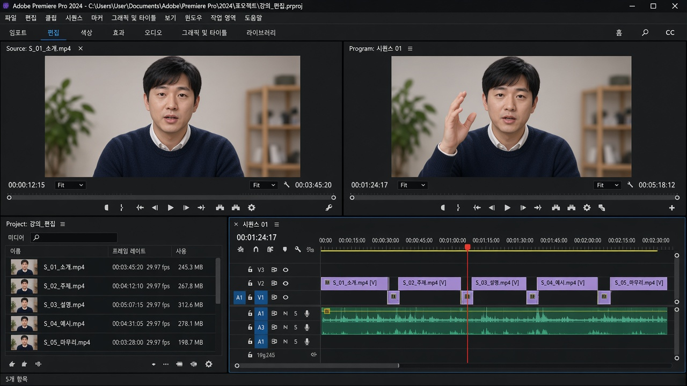

설치 · 실행
프리미어를 켠다
Creative Cloud 설치, 첫 실행, 작업 폴더, 새 프로젝트까지 막히지 않게 따라 갑니다.
Adobe Premiere Pro
with 방송연구학회
컬러와 이펙트는 뒤로 미룹니다. 먼저 영상을 자르고, 리듬을 만들고, 소리와 화면을 연결하는 방법을 익힙니다.

설치 · 실행
Creative Cloud 설치, 첫 실행, 작업 폴더, 새 프로젝트까지 막히지 않게 따라 갑니다.
타임라인
인·아웃, 레이저, Ripple Delete, 트림 도구로 불필요한 순간을 걷어냅니다.
리듬
J-cut, L-cut, 컷온액션으로 컷이 눈에 띄지 않게, 이야기는 앞으로 가게 만듭니다.
위에서 아래로 순서대로 보는 것을 권합니다. 처음이라면 01부터 시작하세요.